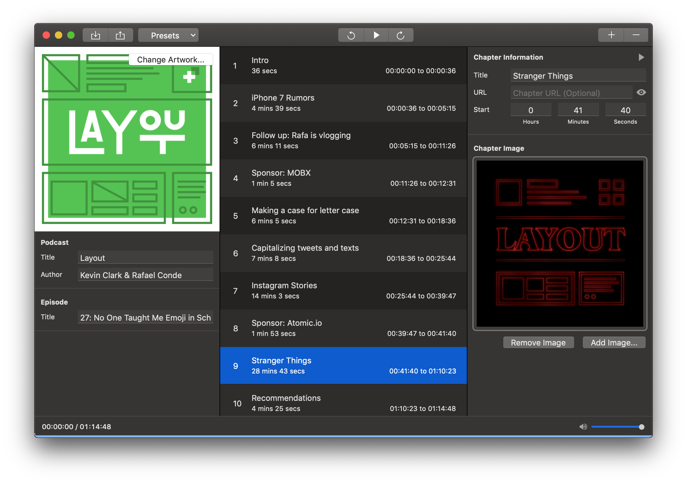

Podcast Chapters
Release Notes
Thanks for using Podcast Chapters, I really appreciate your support, and I hope you've found it useful so far! I'll be releasing updates here and there to add features and fix bugs. You can find a list of the changes so far on this page.
Podcast Chapters 2.8Released January 4, 2021
- Support for dragging and dropping chapter artwork straight to chapters in the main chapter list - no need to select the chapter first!
- Podcast Chapter is now a native app on M1-based Macs, and on Big Sur
Podcast Chapters 2.7Released November 2, 2020
- This version adds support for export to JSON chapters format, a new standard for describing podcast chapters in JSON form. A checkbox has been added to the export options, right above the option to generate a web player. The new format is very similar to the old one, but there are differences so anything consuming the exported JSON will need to be changed to use the new format. Therefore, the old format remains the default for now. As the format is so new, the box will need to be checked each time. If everything proceeds as expected with the standard and it gains wider adoption, I expect the new format to eventually replace the old one.
Podcast Chapters 2.6.2Released August 9, 2020
- Fixed a bug where Podcast Chapters would crash on export if there was no podcast artwork. Also prevented CSV import from being able to replace the current podcast artwork with nothing (which could cause the crash). Thanks once more to TJ Luoma for a great problem report.
Podcast Chapters 2.6.1Released August 7, 2020
- Fixed a bug with the CSV import: if the times were given as minutes and seconds - instead of hours, minutes, and seconds - they would not be set in the imported chapters. Thanks to once again to TJ Luoma for reporting the problem!
Podcast Chapters 2.6Released July 28, 2020
- Podcast Chapters can now accept import of podcast data from CSV files, including episode descriptions, chapters, and images. Here's more information on the format.
Podcast Chapters 2.5Released June 23, 2020
- Does your podcast have more than 256 chapters? No? Well, if you ever do create one, Podcast Chapters will no longer crash trying to save the file. Big thanks to @getraf for the excellent problem report!
Podcast Chapters 2.4.1Released May 29, 2020
- Fixed a second bug causing invalid chapter information to be written, ruining the day in some podcast players.
Podcast Chapters 2.4.0Released May 24, 2020
- Fixed a problem which caused Antennapod to not display any chapters past the first one, and could cause chapter names to display with garbage characters at the end. Also, it was just plain wrong of Podcast Chapters to do this. Thanks to Presentástico for the problem report!
Podcast Chapters 2.3.1Released May 14, 2020
- Fixed a problem with the keyboard shortcuts for going to the previous and next chapters. If you combined them with clicking in the main chapter list, the results could be very confusing. The reason was that clicking the list did't update the playback position (as can be seen at the bottom of the window), while the shortcuts looked at the playback position to figure out where to go next. Now, clicking in the list also sets the playback position, simple as that. Big thanks, once more, to TJ Luoma for the problem report!
Podcast Chapters 2.3.0 Released May 1, 2020
- More keyboard shortcuts!
- ⌘T focuses the chapter title text field
- ⌘U focuses the chapter URL field
- ⌥⇧⌘1 to 0 jumps to the first ten chapters (0 is 10 in this case).
(Wonder how to find shortcuts? They're all listed up in the menus at the top of the screen.)
Podcast Chapters 2.2.0 Released April 21, 2020
- Export to JSON
- Fixed a bug where Podcast Chapters wouldn't let you pick an image with the extension .jpeg as chapter or podcast artwork, unless you dragged and dropped it. Thanks @presentástico for reporting the problem!
- Improved the code for keeping track of the current playback time a bit
- You can swipe chapters in the main list to the left to delete them. (And presets in the presets manager too, if you happen to be working with those a lot)
Podcast Chapters 2.1.0 Released March 9, 2020
- 2.0 had a nasty bug which could cause a crash when you tried to save, if the MP3 file contained comments. This version fixes that bug. The problem points toward some more work needing to be done around comments, but we can't sit around crashing while it happens. Fix first, then polish. Thanks for all the great problem reports [@MisterDavidK](https://twitter.com/MisterDavidK), [@DavoCaddy](https://twitter.com/DavoCaddy), and Miller Krause!
Podcast Chapters 2.0.0 Released March 1, 2020
- Espisode descriptions are back, enabling you to enter as long or as short a description as you like. (Emoji work too 🎉)
- The Metadata window has secretly been around for a while, but now it's actually useful enough to mention: It shows you all the MP3 metadata on your file, regardless of which app added it. Identifier, description and - for most types of content - the actual content is displayed. No editing is possible though, at least not yet
- Oh, and lots of fun improvements under the hood. Well, fun for me, the developer, anyway. Trust me, the seams and back of the cupboard are put together more nicely than ever before
Podcast Chapters 1.6.4 Released February 9, 2020
- Fixed a couple of elusive problems with text handling, which could leave some podcast players unable to display chapter images and sometimes even the whole chapter information. Thanks to Tun Myaing and Victor Häggqvist for reporting the problems!
Podcast Chapters 1.6.3 Released January 24, 2020
- Fixed a problem with chapter start times being off when playing back the finished file. Yes, the problem from this summer came back in a new form. Thanks @jacobtender for reporting the problem, both times!
Podcast Chapters 1.6.2 Released December 28, 2019
- Editing of presets has been added. Simply open the presets menu, click "Manage Presets", select the one you want to change and click "Edit Preset"
- Fixed a problem reading file metadata edited by some other applications. (Techy details: Podcast Chapters failed to read metadata written using certain encodings which didn't exist before version 2.4 of the ID3 specification.) Thanks to Olaf Dieckmann for reporting the problem!
Podcast Chapters 1.6.1 Released August 2, 2019
- When using keyboard shortcuts (shift-command-left and right arrow) to skip between chapters, the selected chapter information is also updated. Thanks Federico Travaini for the suggestion!
- Chapter start points are marked on the timeline at the bottom of the window.
- Hidden chapters have a dashed border in the main list.
Podcast Chapters 1.6 Released July 23, 2019
- You can now drag MP3 and CUE files right to the app window, no need to drag to the dock anymore.
- If you dragged a CUE file to the app without having a podcast open, the app would crash. This is no longer the case. Thanks Federico Travaini for the problem report!
- If your MP3 file already includes data about lyrics, Podcast Chapters is now better at properly preserving this information. The lyrics frame is sometimes used to display a description of the podcast, so support for showing and editing this information is planned for future versions.
Podcast Chapters 1.5.6 Released July 13, 2019
- Fixed a problem which could cause chapter information to be lost after export. It was probably rare on the whole, but common for users who were unfortunate enough to be affected by it. It took an extra day and version to fully grasp the problem and put a proper fix in place, so this really is information for both 1.5.5 and 1.5.6. Thanks @ucitykid88 and @papadimitriou and Federico Travaini for problem reports!
Podcast Chapters 1.5.4 Released June 21, 2019
- Fixed a problem with chapter start times being off when playing back the finished file. The playback engine needed an upgrade to provide better timing precision. Thanks @jacobtender for reporting the problem!
- Fixed a bug with chapter durations being incorrectly set. Thanks Franco Solerio for reporting the problem!
Podcast Chapters 1.5.3 Released June 12, 2019
- Fixed a bug with adding or editing chapters where the current playback time would always be used instead of what you were trying to enter. Thanks @papadimitriou, Franco Solerio, and @LeonardChrist for reporting the problem!
Podcast Chapters 1.5.2 Released June 11, 2019
- Improved preservation of existing ID3 v2.2 metadata, text frames and comment frames are now properly handled. This work is also progress toward bringing back episode descriptions, as they are comment frames behind the scenes. Thanks Gene Lavergne for reporting the problem!
Podcast Chapters 1.5.1 Released May 30, 2019
- Bug fix: Fixed a bug where files without any ID3 metadata at all would be incorrectly read and as a result lack some amount of time when exported. Thanks @davidarribas for excellent problem reports!
Podcast Chapters 1.5 Released May 27, 2019
1.5 is major on the inside: it's more or less the same nice car with a new engine. Don't worry, it still handles just the same, it just requires less maintenance, uses less fuel and will be easier to upgrade in the future!
All that said, of course there are a couple of immediately useful additions too:
- Hidden chapters: Each chapter now has a checkbox to remove it from the chapter table of contents. This means you can have an image and/or URL show up while the podcast is playing without adding more chapters for the user to choose from. Great for easter eggs! Thanks @jacobtender for the suggestion!
- Chapter with current playback time: Create a new chapter while the episode is playing, and the chapter will be set to start at the current playback time. This works both with button clicks and the CMD+N keyboard shortcut.
- Bug fixes: Fixed lots of problems with opening MP3:s with existing chapters. This means, for example, that if you edit your podcast in an app like Hindenburg, you can export your MP3 including chapter information straight from there. The same should go for any other editing app supporting exporting to MP3 with chapters. Thanks @tjluoma for some great bug reporting!
The next big feature will probably be restoring episode descriptions. It has been requested by multiple users and required this engine change to work well. I also realized while working on thus that descriptions (or comments as they're know inside the ID3 tags) have a bunch of interesting cases to handle if I don't want to mangle existing metadata. And I don't, so I will proceed with some care.
Thanks again to everyone using the app, everyone who has reported a bug or a wish, and everyone else who makes it fun to develop Podcast Chapters!
Made on a MacBook Adorable.
Podcast Chapters 1.4.1 Released March 18, 2019
A very small version to mark the transition of developer for the app.
- Bug fix: Hopefully fixed a crash which could occur if a podcast was opened including a chapter without a title.
- New developer: new copyright information, new certificates to manage. Developers out there know what a delight it can be, everyone else can ignore and be happy. (This time, a reboot was happily all that was required to solve the issue.)
Podcast Chapters 1.4 Released September 22, 2018
This is our Mojave release, with support for Apple's latest version of macOS.
- Dark mode: Now you can finish up your episode late into the night, with support for macOS Mojave's dark theme.
- Accent colors: With macOS Mojave, you can use red, green, even pink as your system accent color, and now, whether you're sticking with good old blue, or making your Mac your own, Podcast Chapters will be right there with you.
- Bug fixes: We fixed a few bugs in this release, including an issue with dragging images into your chapters.
Podcast Chapters 1.3.2 Released January 5, 2018
In this minor update I've fixed a bug that showed up in the 1.3.1 release.
- Cover images now work properly in Finder and iTunes.
Podcast Chapters 1.3.1 Released December 20, 2017
In this minor update I've fixed a couple of bugs that managed to creep through in the 1.3 release.
- Some of you reported that playback wasn't working for you. It should be fixed in this build.
- Fixed an annoying crash when using UTF-8 characters.
- Fixed an occasional crash when opening a podcast.
Podcast Chapters 1.3 Released November 20, 2017
This update simply would not have been possible without the incredible work of Fredrik Björeman, who ported the entire app to Swift 3. This was no small task, and I'm incredibly indebted to him.
In this update, Podcast Chapters gets a couple of new features, and fixes a few bugs that managed to creep through.
- Drag-and-Drop: Fredrik has gone through and enabled drag-and-drop all over the app. You can now drag images onto the cover art or chapter image areas, saving you from using the file picker every time.
- Export Chapters as Cue Files: As of Podcast Chapters 1.2 you could import chapter markers from
cuefiles. Well now you can export to them as well! Note: Cue files only allow for a title and a timestamp, so unfortunately any URL or images associated with the chapter aren't exported. - Export Chapters to Show Notes: You can now export your chapter markers in a show-note-friendly text format, perfect for listeners who don't have a client that supports MP3 Chapter Markers.
- Bugfixes: Squashed a number of bugs, including:
- Dismissing the import dialog panel would crash the app before (thanks to Daniel Oskarsson for sending me their bug report).
- The eagle-eyed among you might've noticed that 'Chapter Images' was incorrectly titled 'Chapter Information' in the last version. We've fixed that.
The minimum macOS version in this update has changed to macOS Sierra.
Podcast Chapters 1.2 Released September 5, 2016

In this big update, Podcast Chapters gets a ton of new features, helping you with that annoying last part of the podcast process.
- Metadata: Podcast Chapters now lets you update all other kinds of MP3 metadata for publishing your podcast, including the name of your podcast, the episode's title, and your show art.
- Presets: You can now save a preset for a show, letting you quickly and easily fill information about the podcast, without having to find the pesky show art each time.
- Import Chapters: You can now import your chapters from cue files.
- Chapter Artwork: You can now add artwork to a chapter marker! Give it a try!
- Bugfixes: Squashed a number of bugs, including:
- Annoying text encoding bug (thanks to Preben Friis of Hindenburg Systems for helping me debug this).
- Conflicts between the shortcuts for jump time and screenshots. You can now use ⌥⌘1-5 to change the jump amount. This will also now update the menus! (My thanks to Ali Moosa for their help with this)
- A number of VoiceOver bugs.
Podcast Chapters 1.1 Released January 29, 2016
In this release, Chapters has been renamed Podcast Chapters.
- Podcast Chapters now works nicely with VoiceOver.
- Podcast Chapters will now convert your MP3 file to use ID3 v2.3 tags. No more messing around in iTunes to change the tag versions!
- Podcast Chapters will let you overwrite files now. Sorry about that.
- Podcast Chapters has received some minor visual touchups, to make sure your experience is just that much more polished.
Chapters 1.0 Released January 24, 2016

Initial Release.